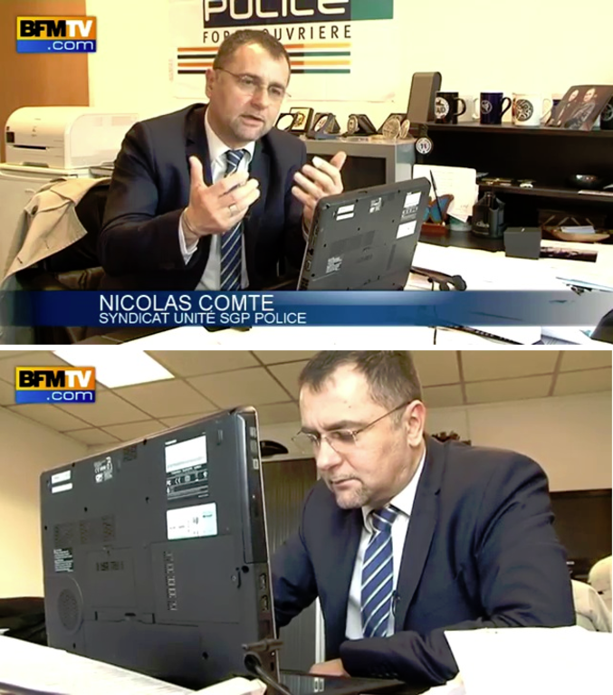

Histoire d’Erreurs
Dominique Derrier
Pierre Le Calvez
Dominique Derrier


| Officiellement |
… |
| 0x19 XP |
OpenSource |
| Neotrust |
|
| vCISO |
CTF Builder/runner |
| iso27001 & NIST |
ESP32, Docker, Vim |
Pierre Le Calvez


| Officiellement |
… |
| 0x14 XP |
ex-Pentester 💀 |
| CGI |
Incident Response enthusias 💣 |
| Vice-Président Cybersécurité |
Amateur Mountain Climber 🔠& Skimo Fan â›·ï¸ |
|
|
Disclaimer

👉 C’est drôle mais on ne se moque pas.
👉 l’idée est de partager
des évènements et cas réels ou adaptés.
👉 On se veut
bienveillant.
👉 On peut apprendre de l’erreur des autres.
👉
Attention certaine section sont NSFW
👉 ChatGPT n’a pas été
maltraité durant la production de de ces slides
INSERT COIN
Mot de passe
 Le pire
mot de passe que vous puissiez utiliser (et donc cracker)… Lors d’un
pentest, l’idée est de recueillir des mots de passe pour en éprouver la
solidité.
Le pire
mot de passe que vous puissiez utiliser (et donc cracker)… Lors d’un
pentest, l’idée est de recueillir des mots de passe pour en éprouver la
solidité.
Mot de passe
Mise à jour
Le monitoring, MRTG, PRTG, Zabbix, Datadog, Prometheus… Il existe des
milliers d’outils pour avoir une visibilité essentielle afin de traiter
et d’aider à la gestion des incidents. La mise à jour est nécessaire
pour garder une gestion optimale.
Mise à jour
Droit d’admin
Grosse activité sur le réseau d’administration, celui qui n’est pas
connecté à Internet mais qui permet de relier tous les clients. Le
firewall a le CPU dans le tapis. Il y a trop de drops dans les logs qui
saturent le CPU.
Droit d’admin
Sur Le réseaux
Sur Le réseaux
Prod Toujours
Le client qui effectue une loterie quotidienne avec 100 000
utilisateurs doit avoir une mise à jour.
La mise à jour a été lancée
sur le système.
A priori, le CAB n’a pas été bien réalisé…
Évidemment, la machine n’a pas redémarré.
Et comme un incident
n’arrive jamais seul, La procédure de rollback n’a pas été écrite.
Prod Toujours
âš ï¸ WARNING! LOW HEALTH
Fraude Telephonique
Une compagnie vous appelle pour l’aider pendant une fraude
téléphonique. En effet, elle s’est rendu compte de la mise en place
d’une redirection téléphonique vers un numéro surtaxé (que vous
maîtrisez). Le client a déjà subi 20 000 $ de fraude pendant le week-end
et vous demande un devis pour l’aider.
Fraude Telephonique
Mysql
Erreur d’indisponibilité sur un serveur client à forte consultation :
la base ne répond plus à la même heure chaque jour. Cela fait plusieurs
jours que cela dure.
Mysql
Rm /save
Pour aller
plus vite les administrateurs sont créatifs à faire des raccoucis pour
fluidifier leur gestion.
Un admin a fait : ln –s /opt/database/
/osave
Quelques jours plus tard pour faire le ménage un autre a
fait : rm /osave/*
Rm /save
Déclarer ou pas Déclarer
On arrive le lundi matin et il n’y a plus rien qui marche… C’est le
drame… On nous demande une rançon. La totalité des fichiers de
l’entreprise est chiffrée et, pour les récupérer, il faut payer. Alors,
que fait-on ?
Déclarer ou pas Déclarer
MDR Team

L’équipe utilise une équipe de réponse pour traiter les incidents, un
service coûtant plusieurs milliers de dollars par mois. Ils remontent
des alertes et déclenchent le plan d’escalade…
Mais il est
impossible de trouver les traces.
MDR Team
💀 GAME OVER
Gestion d’incident
Incident arrive, c’est dans la douleur qu’on apprend le plus vite… et
c’est moins le fun. Intervention chez un client c’est parti pour
organiser, mais il manque quelques éléments.
Gestion d’incident
Le Blackberry Perdu
Mais où sont jeté les anciens téléphones ? Dans les poubelles
biensur… Et à votre avis … dans un telephone il y a quoi ?
Le Blackberry Perdu
Recovery
Recovery
Phishing
La sensibilisation par le phishing est l’un des premiers outils de
sensibilisation marquants pour les équipes et les entreprises de toute
taille qui utilisent l’informatique.
Comment une sensibilisation
par phishing peut-elle vraiment mal tourner ?
Phishing
Le mot de la fin …
Même si
👉 l’amélioration continue,
👉 l’ia,
Les questions de sécurité ne vont pas disparaitre et les erreurs
humaines ne vont pas s’arrêter.
Si l’on ne veut pas continuer Ã
apprendre de ses erreurs, une dose d’humour dans l’amélioration continue
est nécessaire pour avancer.